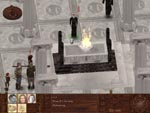
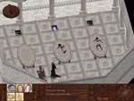

| Max 4 Skill Points, Major Power of Flame Skill Improvement -OR- 1000 drachs, and Vectrix's Journal (+5 medical skill to one party member) |
Background/Summary
The Thaumaturgist Vectrix has created a lair in the sewers where he can conduct secret medical experiments on animated corpses. His experiments have started to come to a head, and in his need for more bodies he has stolen a Flame blood corpse before it could be burned. This is a huge issue for followers of the Flame, and the Priestess wants to know why the body was stolen, and to have the body recovered if at all possible.
Player's Introduction
After completing Priestess good graces the party can speak with the Priestess.
Objectives
Stop bodies from being stolen from the morgue.
Completing Objectives
| 1) Speak with the Priestess about the missing corpses and she will send the party to the Crematorium to investigate who is stealing the bodies. |
 |
| 2) There are two ways to enter the part of the sewers where the party needs to go. |
 |
| 2.1) With the Priestess's permission Mersius, the priest at the Crematorium, will give the party permission to enter through the grate at the back of the room. If someone in the party has strength of at least 14, they will be able to open the grate +1SP |
| 2.2) Alternatively the party can enter through another grate near the Citadel Cemetary, which right to the southwest of the city. |
| 3) The party will find Vectrix and his zombie corpses in the drain below the Crematorium. There are a few ways to deal with Vectrix. |

|
|
3.1) Vectrix will explain that he's stealing the bodies for medical reasons. If the party has someone with literacy and lore skill and someone with medical skill of at least 16 they will realize that Vectrix is doing important research. The party can then tell Vectrix to return the Flame corpse and continue his work. Vectrix will then give the party Vectrix's Journal and a Dead Body. Return to the Priestess to explain what happened. If Vectrix is still alive the leader must have a speech skill of at least 21 and a Dead Body to successfully convince the Priestess that the threat has been eliminated. |
|
3.2) Attack and kill Vectrix and zombies. |
|
3.3) Take Vectrix to see the priestess where he will be executed. |